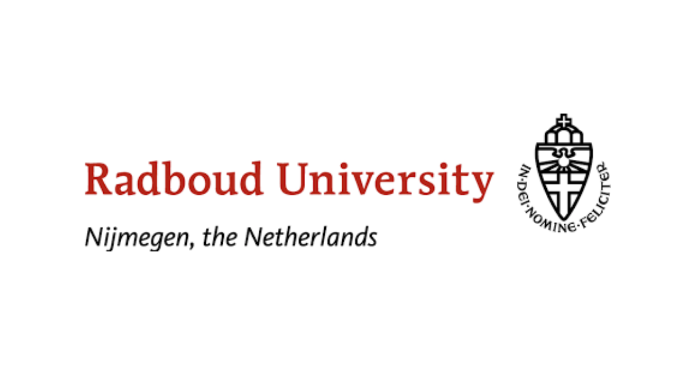

I started my studies at the Politechnic University of Timisoara, at the
faculty of Computing-Science in 2020. I did my first year of
University here,and at the time of writing this I am close to
finishing my 2nd year.
Radboud University

In 2021, I decided to try the Erasmus project, so I studied at Radboud University for the first
half of the year . The first year of university has laid a base when it comes to programming concepts,
then the six months at Radboud polished it and added a lot more.
The time there helped me realise how interesting programming truly is and that I really wanna work in this domanin.
I have gathered knowledge and experinece about Cryptography, Security,Combinatorics, Operating Systems, Algorithms and Data
Structures and Data Mining
This website represents a personal project, it is not to be published
online, only as a private project on git.